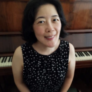
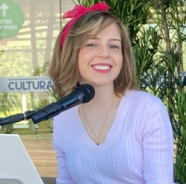

Conheça nossa equipe

Período: 2021-2024.
Período: 2021-2024.
Período: 2022-2024
Período: 2021-2023

Período: 2022-2023
Período: 2022-2023
TESE DE DOUTORADO
Silva, E. G.
2021
2021
Preferência e emoção em ambientes de escuta musical mediados pela tecnologia. Tese de doutorado. Universidade Federal do Paraná, PR, Brasil.
LINK
TCC
Alves, A. A.
2023
2023
Correlações entre a prática instrumental e o desempenho de estudantes em disciplinas de estruturação musical em um curso de graduação em música. Trabalho de Conclusão de Curso (Bacharelado em Música). Universidade Federal do Paraná, Curitiba, PR, Brasil.
LINK
TESE DE DOUTORADO
Mello, E. K. S.
2021 A influência da familiaridade musical sobre a formação de expectativas melódicas: um estudo transcultural. Tese de doutorado. Universidade Federal do Paraná, PR, Brasil. LINK
2021 A influência da familiaridade musical sobre a formação de expectativas melódicas: um estudo transcultural. Tese de doutorado. Universidade Federal do Paraná, PR, Brasil. LINK